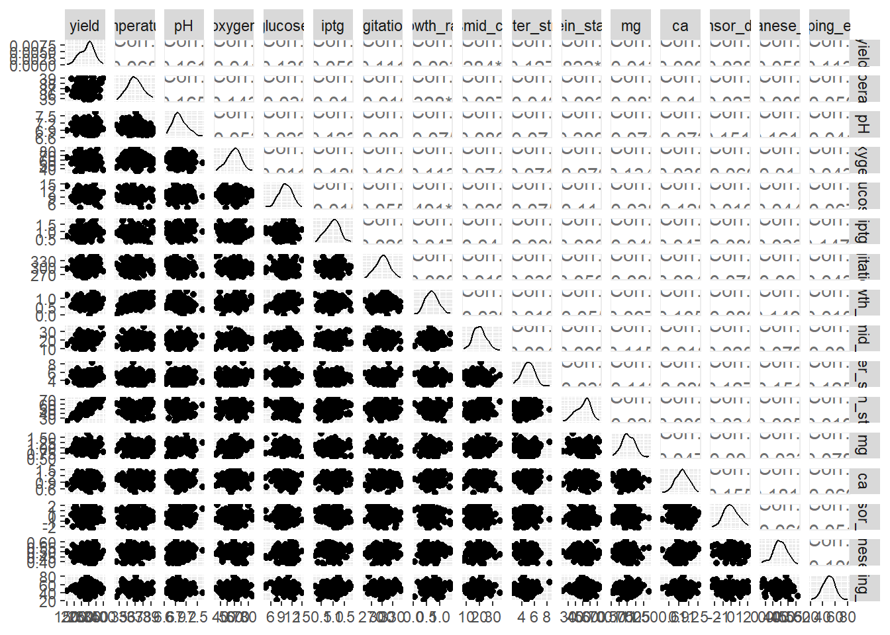
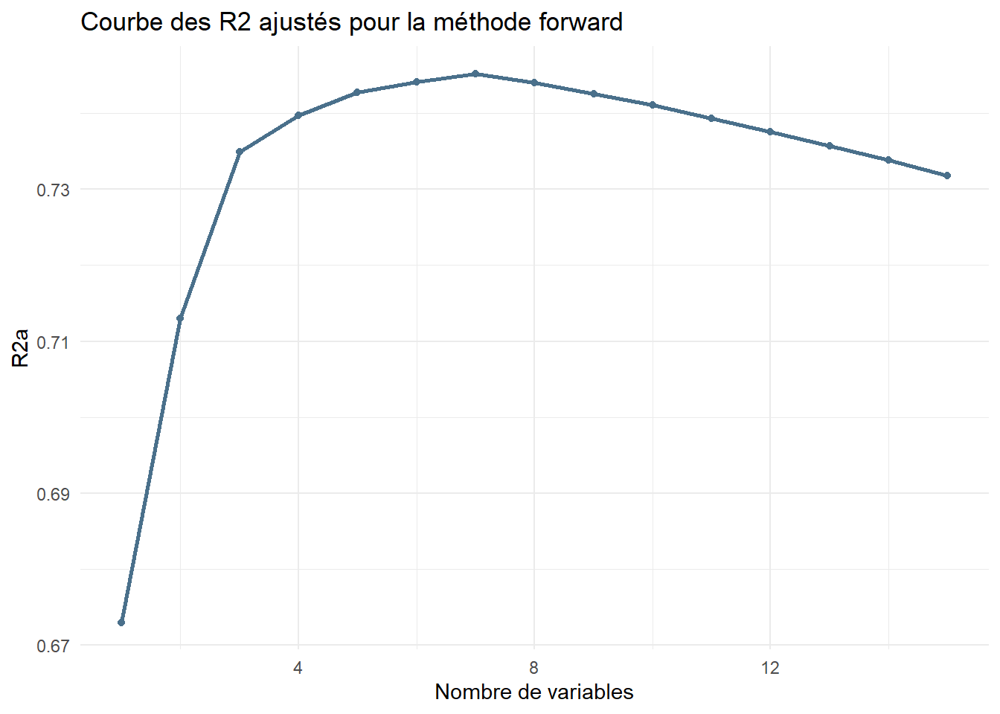
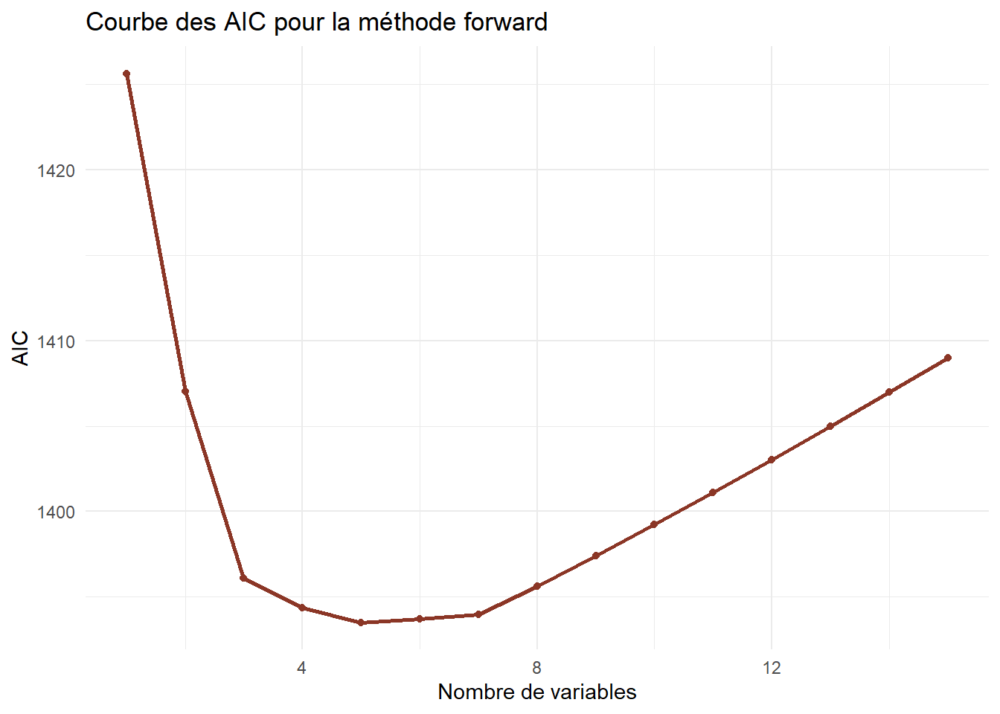
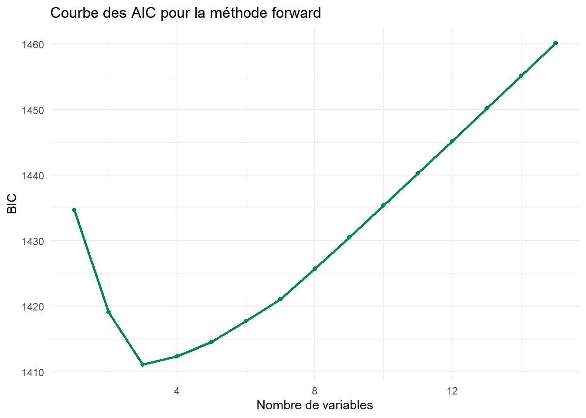
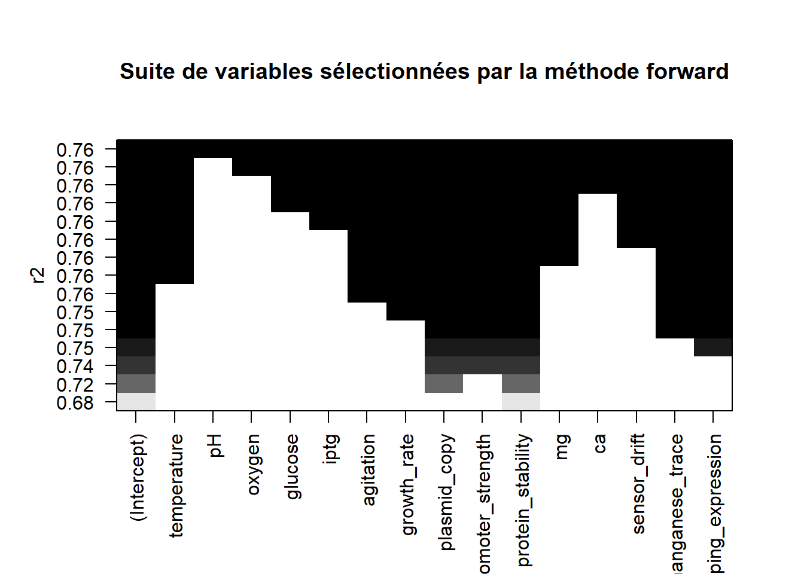
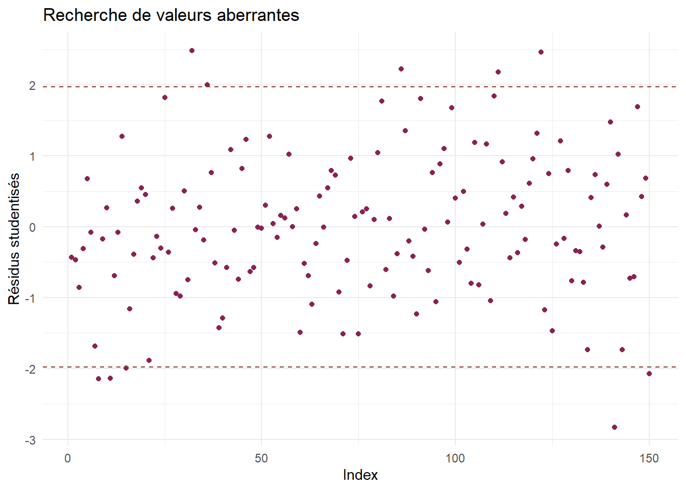
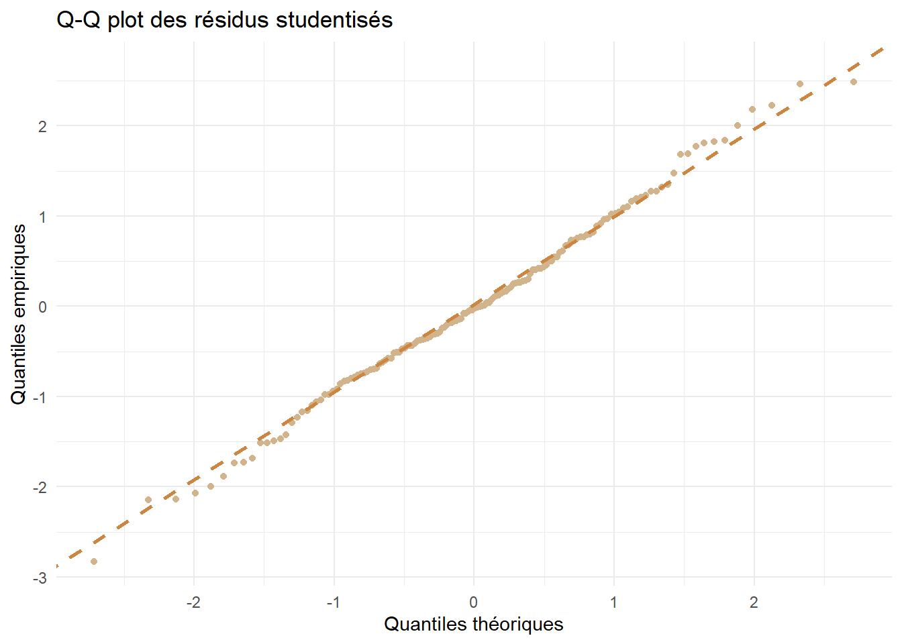
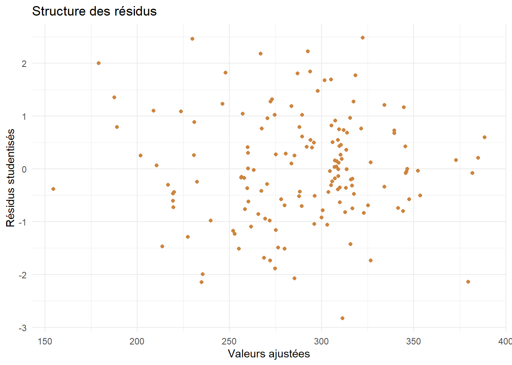
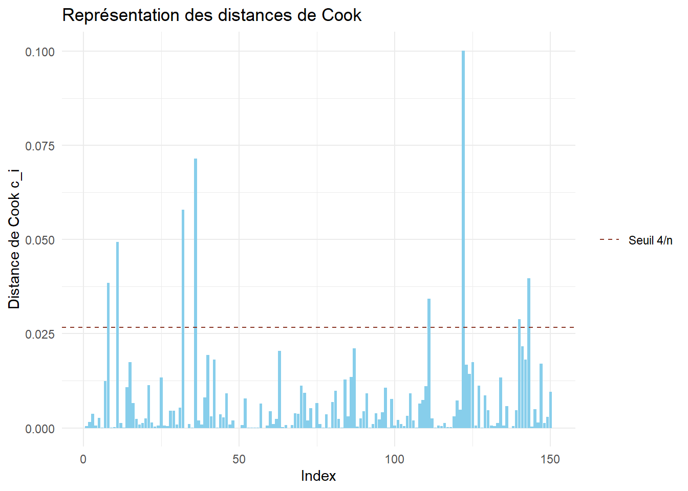
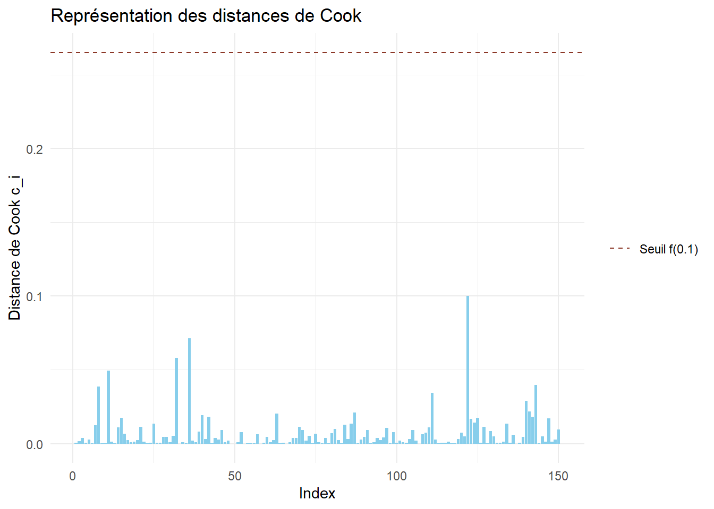

Les données de cet exercice ont été simulées à des fins pédagogiques, et ne reflètent en rien une réalité biologique.
On cherche à optimiser la production d’une protéine recombinante exprimée par une bactérie (E coli) génétiquement modifiée cultivée en bioréacteur.
On réalise pour cela \(n=150\) expériences indépendantes, résumées dans le jeu de données disponible ici .
Chaque observation correspond à une expérience indépendante de culture, réalisée avec des conditions expérimentales légèrement différentes selon :
les paramètres physico-chimiques du milieu;
les conditions d’induction de l’expression;
les caractéristiques biologiques du système d’expression;
les variations techniques ou environnementales.
L’objectif est de modéliser le rendement final de production (en mg/L) en fonction de nombreuses variables explicatives, dont certaines ont un effet fort, d’autres un effet faible.
Les variables présentes dans le jeu de données sont :
yield : rendement final en protéine recombinante (en mg/L);
temperature : température de culture (°C)
pH : pH du milieu
oxygen : taux d’oxygène dissous (%)
glucose : concentration initiale en glucose (g/L)
iptg : concentration en inducteur IPTG (mM/L)
agitation : vitesse d’agitation (rpm)
growth_rate : taux de croissance bactérienne (\(h^{-1}\))
plasmid_copy : nombre moyen de copies plasmidiques par cellule
promoter_strength : force relative du promoteur
protein_stability : indice de stabilité de la protéine exprimée
mg : concentration en magnésium (mg/L)
ca : concentration en calcium (mg/L)
sensor_drift : dérive du capteur d’oxygène (%)
manganese_trace : concentration de manganèse dans le milieu (mg/L)
yield temperature pH oxygen
Min. :148.6 Min. :34.69 Min. :6.649 Min. :33.57
1st Qu.:252.0 1st Qu.:36.36 1st Qu.:6.896 1st Qu.:53.02
Median :298.0 Median :36.94 Median :7.005 Median :60.09
Mean :288.4 Mean :36.98 Mean :7.019 Mean :59.54
3rd Qu.:322.0 3rd Qu.:37.58 3rd Qu.:7.134 3rd Qu.:66.58
Max. :401.3 Max. :39.19 Max. :7.648 Max. :85.71
glucose iptg agitation growth_rate
Min. : 4.380 Min. :0.2195 Min. :249.8 Min. :0.03601
1st Qu.: 8.901 1st Qu.:0.7805 1st Qu.:288.0 1st Qu.:0.51590
Median :10.181 Median :0.9979 Median :302.1 Median :0.68884
Mean :10.128 Mean :0.9913 Mean :301.2 Mean :0.71285
3rd Qu.:11.469 3rd Qu.:1.1976 3rd Qu.:315.6 3rd Qu.:0.87860
Max. :14.860 Max. :1.8075 Max. :353.7 Max. :1.42469
plasmid_copy promoter_strength protein_stability mg
Min. : 8.113 Min. :2.686 Min. :23.05 Min. :0.5503
1st Qu.:16.584 1st Qu.:4.266 1st Qu.:44.08 1st Qu.:0.8939
Median :19.732 Median :4.930 Median :53.00 Median :1.0108
Mean :20.050 Mean :4.943 Mean :50.77 Mean :1.0189
3rd Qu.:22.845 3rd Qu.:5.623 3rd Qu.:57.54 3rd Qu.:1.1697
Max. :35.920 Max. :8.390 Max. :72.84 Max. :1.6581
ca sensor_drift manganese_trace housekeeping_expression
Min. :0.3904 Min. :-2.32076 Min. :0.3746 Min. :21.51
1st Qu.:0.8614 1st Qu.:-0.66182 1st Qu.:0.4692 1st Qu.:43.05
Median :1.0016 Median :-0.06476 Median :0.4948 Median :49.69
Mean :1.0018 Mean :-0.04402 Mean :0.4956 Mean :49.79
3rd Qu.:1.1585 3rd Qu.: 0.58321 3rd Qu.:0.5237 3rd Qu.:56.32
Max. :1.5155 Max. : 2.05850 Max. :0.6141 Max. :80.22
library(GGally)ggpairs(bioreac)

Ajuster un modèle linéaire sur ces données. Préciser le coefficient de détermination \(R^2\) obtenu.
On remarque que l’on ne peut pas rejeter l’hypothèse de nullité pour un grand nombre de coefficients.
Le coefficient de détermination obtenu est \(R^2 = 0.7588\).
Préciser les coefficients du modèle qui semblent significativement non nuls. Que peut-on dire des autres coefficients ?
Réponse
Les coefficients du modèle significativement non nuls sont ceux associés aux variables plasmid_copy, promoter_strength et protein_stability. Les autres variables semblent donc rien n’apporter de plus que celles-ci dans le calcul du rendement final. On va tester la nullité simultanée des coefficients associés à ces dernières variables.
mod_reduit <-lm(data = bioreac,formula = yield~plasmid_copy+promoter_strength+protein_stability+0)# Ajouter le +0 indique que l'on ne prend pas de constante (Intercept) dans le modèle.summary(mod_reduit)
Call:
lm(formula = yield ~ plasmid_copy + promoter_strength + protein_stability +
0, data = bioreac)
Residuals:
Min 1Q Median 3Q Max
-68.413 -15.606 -1.276 15.716 59.909
Coefficients:
Estimate Std. Error t value Pr(>|t|)
plasmid_copy 2.1102 0.3778 5.586 1.10e-07 ***
promoter_strength 8.2808 1.6238 5.100 1.03e-06 ***
protein_stability 4.0388 0.1668 24.221 < 2e-16 ***
---
Signif. codes: 0 '***' 0.001 '**' 0.01 '*' 0.05 '.' 0.1 ' ' 1
Residual standard error: 24.84 on 147 degrees of freedom
Multiple R-squared: 0.9929, Adjusted R-squared: 0.9928
F-statistic: 6881 on 3 and 147 DF, p-value: < 2.2e-16
anova(mod_complet,mod_reduit)
Analysis of Variance Table
Model 1: yield ~ temperature + pH + oxygen + glucose + iptg + agitation +
growth_rate + plasmid_copy + promoter_strength + protein_stability +
mg + ca + sensor_drift + manganese_trace + housekeeping_expression
Model 2: yield ~ plasmid_copy + promoter_strength + protein_stability +
0
Res.Df RSS Df Sum of Sq F Pr(>F)
1 134 84056
2 147 90677 -13 -6621 0.8119 0.6467
Ici, on ne peut effectivement pas rejeter l’hypothèse comme quoi tous ces coefficients son nuls, y compris l’intercept.
Afin d’expliquer au mieux la variable yield, on va appliquer la méthode de sélection “forward” à ce modèle linéaire.
A l’aide de la fonction regsubsets() du package leaps, appliquer la procédure “forward” au jeu de données.
Voir le code
library(leaps)list_forward <-regsubsets(x=yield~.,data=bioreac,method="forward",nvmax=ncol(bioreac))# nvmax correspond au nombre maximal de variables que le procédé va sélectionner.
Représenter graphiquement dans quel ordre les variables sont sélectionnées.
Voir le code
plot(list_forward,scale="r2",main="Suite de variables sélectionnées par la méthode forward")
Stocker le résumé de la procédure dans un objet summary_forward. A partir de cet objet, et des fonctions AIC(), BIC() et lm(), récupérer les \(AIC\), \(BIC\) et \(R_a^2\) pour chaque modèle de la procédure.
Voir le code
summary_forward <-summary(list_forward)# Récupération des R^2 ajustés (et des critères BIC ?)adjr2_forward <- summary_forward$adjr2# bic_forward <-summary_forward$bic # Cette dernière ligne est commentée. Il ne s'agit pas exactement des "vrais" critères BIC# dans la fonction regsubsets(), mais ils sont égaux à une constante près...# On pourrait donc les utiliser aussi sans changer la procédure.# Pour le critère AIC, on va devoir ajuster un modèle linéaire pour chaque modèle,# puis récupérer l'AIC.# On crée d'abord un vecteur vide où on va stocker les AIC ensuite.aic_forward <-rep(NA,length(adjr2_forward))bic_forward <-rep(NA,length(aic_forward))for(i in1:length(aic_forward)){# On crée la formule à utiliser pour ajuster le modèle linéaire# Dans summary_foraward$which, on récupère les noms de variables sélectionnées # à chaque étape de la méthode forward. formula_i <-as.formula(paste0("yield~",paste(names(which(summary_forward$which[i,-1])),collapse ="+"))) lm_i <-lm(data=bioreac,formula = formula_i) aic_forward[i] <-AIC(lm_i) bic_forward[i] <-BIC(lm_i)}
Représenter ces différents critères sur un graphique ayant :
en abscisses le nombre de variables utilisées;
en ordonnées la valeur du critère étudié.
Voir le code
library(ggplot2)df_forward <-data.frame(Nvar=1:length(aic_forward),R2a = adjr2_forward,AIC=aic_forward,BIC=bic_forward)ggplot(df_forward) +aes(x=Nvar,y=R2a)+geom_line(color="skyblue4",lwd=1)+geom_point(color="skyblue4")+theme_minimal()+labs(title="Courbe des R2 ajustés pour la méthode forward",x="Nombre de variables")

ggplot(df_forward) +aes(x=Nvar,y=AIC)+geom_line(color="tomato4",lwd=1)+geom_point(color="tomato4")+theme_minimal()+labs(title="Courbe des AIC pour la méthode forward",x="Nombre de variables")

ggplot(df_forward) +aes(x=Nvar,y=BIC)+geom_line(color="springgreen4",lwd=1)+geom_point(color="springgreen4")+theme_minimal()+labs(title="Courbe des AIC pour la méthode forward",x="Nombre de variables")

Quel modèle retient-on finalement ?
Réponse
Tout dépend du critère retenu :
On retient le modèle à 7 variables avec le critère \(R_a^2\), donc on conserve les variables :
Remarque : tous ces modèles contiennent la constante (Intercept).
Refaire la question précédente, mais en utilisant cette fois-ci la méthode de sélection “backward”.
Réponse
list_backward <-regsubsets(x=yield~.,data=bioreac,method="backward",nvmax=ncol(bioreac))plot(list_backward,scale="r2",main="Suite de variables sélectionnées par la méthode backward")
plot(list_forward,scale="r2",main="Suite de variables sélectionnées par la méthode forward")

Les deux graphiques étant strictement identiques, nul besoin de poursuivre l’étude, on aura les mêmes modèles, et don les mêmes résultats que précédemment.
Remarque : attention, ce n’est pas toujours le cas !
Quel modèle peut-on finalement retenir ? Préciser le critère utilisé.
Réponse
Il n’y a pas vraiment de bonne ou de mauvaise réponse ici, il faut simplement préciser le critère choisi.
On va prendre le critère \(BIC\), qui était beaucoup plus parcimonieux en termes de variables utilisées, et qui correspond de plus aux tests de significativité qu’on a pu réaliser précédemment.
Effectuer l’analyse des résidus du modèle finalement retenu. Commenter.
Réponse
On calcule tout d’abord les résidus studentisés.
res_stud <-rstudent(mod_choisi)
On analyse d’abord les possibles valeurs aberrantes.
df_stud <-data.frame(Index=1:length(res_stud),Residus = res_stud)q <-qt(p=0.975,df=nrow(bioreac)-5)# les résidus studentisés suivent une loi de Student avec n-p-1 ddl, où p est le# nombre de paramètres à estimer.ggplot(df_stud) +aes(x=Index,y=Residus)+geom_point(color="violetred4")+geom_hline(yintercept =c(-q,q),color="tomato4",linetype="dashed")+theme_minimal()+labs(y="Résidus studentisés",title="Recherche de valeurs aberrantes")

On peut également calculer la proportion de valeurs aberrantes.
mean(abs(res_stud) > q)
[1] 0.06666667
On rappelle que les valeurs aberrantes sont les observations mal prédites par le modèle. Ici, on ne devrait pas dépasser 5% de valeurs aberrantes. Si l’on dépasse un peu ce taux, on ne le dépasse pas de beaucoup, et on voit sur le graphique qu’aucun résidu ne s’éloigne trop des bornes fixés.
En bref : Rien n’attire notre attention pour l’instant.
On analyse ensuite l’hypothèse de normalité du modèle par un Q-Q plot.
ggplot(df_stud) +aes(sample=Residus)+geom_qq(color="tan")+geom_qq_line(linetype="dashed",color="tan3",lwd=1)+theme_minimal()+labs(x="Quantiles théoriques",y="Quantiles empiriques",title ="Q-Q plot des résidus studentisés")

Les points sont bien alignés avec la droite, on valide donc l’hypothèse de normalité.
Enfin, on va analyser brièvement la structure des résidus.
# On récupère les valeurs ajustées du modèledf_stud$pred <- mod_reduit$fitted.valuesggplot(df_stud) +aes(x=pred,y=Residus)+geom_point(color="peru")+theme_minimal()+labs(title ="Structure des résidus",x="Valeurs ajustées",y="Résidus studentisés")

Aucune strucutre particulière ne se dégage ici. On peut valider l’hypothèse d’homoscédasticité (les bruits ont tous la même variance).
En résumé :l’analyse des résidus n’a pas montré de valeurs particulièrement aberrantes ni exhibé une structure remettant en cause notre modèle linéaire. Cela ne siginfie pas que notre modèle est juste, simplement que l’on n’a pas détecté de faille particulière.
Etudier les points leviers du modèle finalement retenu. Commenter.
Réponse
Rappel : un levier correspond au poid qu’a une observation sur sa propre prévision par le modèle.
Des valeurs importantes de certaines variables peuvent expliquer le poids d’une observation, mais cela ne signifie pas pour autant que celle-ci est anormale.
Etudier les distances de Cook du modèle finalement retenu. Commenter.
Réponse
Rappel : la distance de Cook mesure l’influence des observatiosn sur l’estimation des paramètres du modèle.
On récupère les distances de Cook afin de les représenter par un diagramme en barres. On représente dans un premier temps le seuil \(4/n\).
cook <-cooks.distance(mod_choisi)df_cook <-data.frame(Index=1:length(cook),Cook=cook)ggplot(df_cook)+aes(x=Index,y=Cook)+geom_bar(stat="identity",fill="skyblue")+geom_hline(aes(yintercept =4/nrow(bioreac),linetype ="Seuil 4/n"),color="tomato4")+scale_linetype_manual(values="dashed")+theme_minimal()+labs(y="Distance de Cook c_i",title ="Représentation des distances de Cook")+theme(legend.title =element_blank())

Un certain nombre d’observations ont une distance de Cook importante. On peut enquêter un peu plus sur ces derniers.
Des valeurs extrêmes peuvent mettre la puce à l’oreille si une observation est anormale ou non.
On peut utiliser les seuils préconisés par Cook pour voir si ces observations sont préoccupantes.
ggplot(df_cook)+aes(x=Index,y=Cook)+geom_bar(stat="identity",fill="skyblue")+geom_hline(aes(yintercept =qf(0.1,4,nrow(bioreac)-4),linetype ="Seuil f(0.1)"),color="tomato4")+scale_linetype_manual(values="dashed")+theme_minimal()+labs(y="Distance de Cook c_i",title ="Représentation des distances de Cook")+theme(legend.title =element_blank())

Aucune observation ne semble posséder une trop grande influence sur l’estimation des paramètres.
En résumé : sur l’ensemble des dernières questions, rien n’a semblé remettre l’étude statisique en cause. On peut donc valider le modèle assez sereinement.
Remarque : encore une fois, cela ne signifie pas que notre modèle est juste, mais on n’a rien détecté de particulièrement étrange.
On aurait pu néanmoins trouver des observations anormales par les dernières procédures. Dans un tel cas, il convient de déterminer avec le responsable de l’expérience ce qui a pu se produire pour une telle observation, et la retirer le cas échéant. Il n’appartient cependant pas au statisticien seul de retirer une donnée observée, simplement pour justifier son modèle !